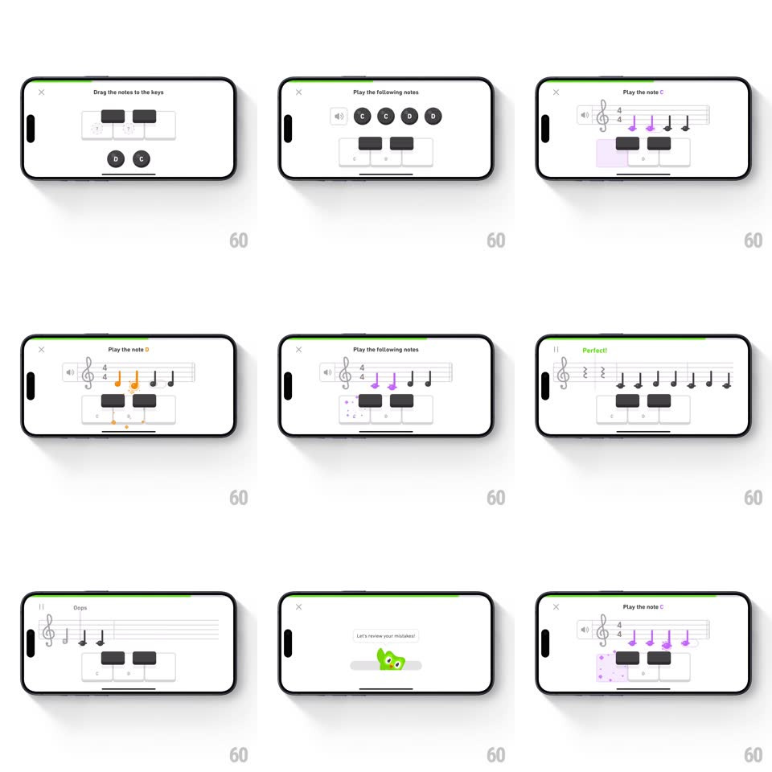

Media
Frame-by-frame

Rebuild this interaction 1:1: Duolingo Music's note exercises - a landscape mini keyboard where you tap lit keys ("Play the note C"), drag note chips onto keys, and play sequences as notes light up along a staff, with "Perfect!" flashes, particle bursts, a progress bar, and a Duo owl cameo.

Rebuild this interaction 1:1: Duolingo Music's note exercises - a landscape mini keyboard where you tap lit keys ("Play the note C"), drag note chips onto keys, and play sequences as notes light up along a staff, with "Perfect!" flashes, particle bursts, a progress bar, and a Duo owl cameo.
## Integration
Integration: stack-agnostic spec - springs given as stiffness/damping, timed motions as duration + curve; map every value to your framework and animation library of choice.
## Scene
White landscape exercise screen: instruction header ("Play the note C"), a two-octave keyboard (white keys, black keys, note labels), a music staff with a treble clef and colored notes, a thin green progress bar at top, close button top-left. Feedback: green "Perfect!" tag; Duo the owl peeking in on completion.
## Motion spec
Pattern: guided instrument play with instant tonal feedback.
- Prompt: the target key glows with a soft purple wash and pulses (scale 1 -> 1.04, 900ms loop) - the lesson points without words.
- Correct tap: the key depresses (translateY 3px, 80ms), its note head on the staff fills purple with a pop (spring ~440/16), a tiny particle puff rises (6-8 dots, 400ms), and the note sounds; the progress bar inches forward with a spring (~360/20).
- Wrong tap: the key flashes red once (150ms) and wiggles horizontally (+-4px, 2 cycles) - no modal scolding.
- Drag exercise: note chips follow the finger (spring ~220/12 lag); near a valid key the key glows and the chip snaps in (spring ~420/18) with a satisfying clack-haptic.
- Sequence play: notes on the staff light in time as you play, a playhead line sweeping under them.
- "Perfect!": a green tag slides in above the staff (spring ~380/18), the bar surges, then Duo slides up from the bottom edge with a wing wave (spring ~320/16, one bounce) before the next exercise crossfades in (300ms).
## Calibration
- Audio-visual latency under 40ms - the key, the note, and the sound are one event.
- The keyboard never reconfigures between exercises - spatial memory carries the lesson.
## Reduced motion
Keys highlight statically; notes fill without pop; no particles.
## Don't miss
- The staff and keyboard stay linked visually - every tap writes music, not just points.
- Duo's cameo is a reward beat - brief, springy, and gone.